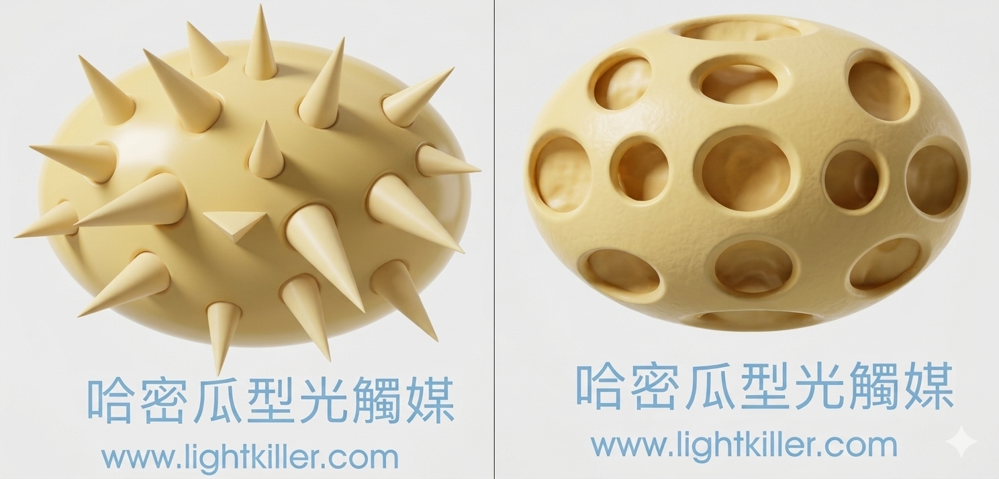

光觸媒應用產品與模組加工(設計.合作)與代工步驟
1. 依客戶所需(討論用途.目標價);使用環境條件,其抗菌或抗污效 除臭....等不同功能是否可行
2. 依被加工材料或元件.選用最佳之光觸媒原料及最佳節省原料之加工法,
3. 產品或模組使用光學設計,使其充份發揮其效果
4. 其它(專利.安規.效能驗證...等)
世屋光觸媒加工自2002年從日本引進台灣,已具有10多年之加工技術與經驗,並榮獲政府研發補助
用於光觸媒材料其實很多,如TiO2、SrTiO3,、ZnO、Nb2O5、WO3、SnO2、ZrO2、CdS 、ZnS.....,(原材料請參考光觸媒濾網及原材)但其中二氧化鈦(Titanium Dioxide)因為具有強大的氧化-還原能力，並且不會產生光溶解,其化學穩定度高及無毒的特性，而被使用來做為光催化,二氧化鈦之結晶可分金紅石型（Rutile）、銳鈦礦型（Anatase）、板鈦礦型(Brookite）三種，如果溫度高達約500-600℃時，銳鈦礦晶型會轉成金紅石晶型,就無觸媒效果,其粉体製造方法有物理及化學法(註1)。
其中銳鈦礦型是目前使用的光觸媒的材料(能階大小約為3.2 eV,吸收波長在380nm左右,),它是每個八面體以邊緣相接，其觸媒及親水活性也最強,並且其折射率比鑽石還高,除此外二氧化鈦的粒徑需在30nm以下,此時的比表面積、孔洞大小、都會較優,雖然有1nm之溶液,缺點則限於極短之保存期限,理論上雖然是其顆粒越小比表面積越大, 效果越佳,但事實不然,因為要考慮到光源折射,使用方法及條件 。
光觸媒必需要有光照才能激發起作用,可見光在400-780nm之間,紫外線又可分三種,UVA是400-315nm(捕蠅燈.水銀燈.太陽燈及投射燈均有此光),UVB則是在280-315nm(曬傷主要原因,),UVC在230-280間(幾乎被臭氧所阻擋掉,245nm則是醫院用於消毒用),原本之二氧化鈦只吸收波長約在360-388n之間的光波區域(取決最終材料之Ev)，不過由於近年來許多日本及德國的學者致力研究開發可見光的光觸媒， 雖有不小的成就,但還是有部份之限制條件尚待努力才能商業化。
最基本的材料都已具全,我們就會想到如何將光觸媒溶解在溶液中,其中有分散技術,不會改變原先之特性為主要考量,在某些加工產品需有高度的附著力,不至於脫落,也不會傷害到被覆著物,或是原本光觸媒不足之功能,使用其它材料複合予加強,,很重要一點必須能量產,製程便宜,保存期限至少一年,以下先簡介部份材料,目前在抗菌部份大都添加奈米銀,或其它奈米金屬,來加強光觸媒在沒有光照時間,還能 發揮抗菌作用,除此外還有多孔性.粒狀性.哈密瓜洞狀.金平糖型....等等類型之光觸媒,都是依據使用功能或基材不同,所開發出光觸媒.因此在產品開發時,首先要定義其產品之功能為何,其加工材料為何,再選用合適之光觸媒,如不了解上述之原理,其光觸媒 在加工後.大部份產品只能達到理論值不到一半之功能,因此光看材料上實驗之數據是不足以採信,(不同之實驗法也會造持極大落差).
施工或加工作業有許多技巧,是依造加工物特性與功能,選擇最佳之光觸媒原料,光觸媒加工是屬薄膜加工技術,如同許鏡片上之多層膜也是薄膜加工技術之一,光觸媒有如兩刃刀,可以分解有機物,相對也可以分解有機之基材,因此正確的認識其材料是必須的課程

※光催化劑量的增加 比表面積擴大吸收力、選擇性強化氧化劑的添加 熱反應、放電、超音波媒介物等的變更接觸方法的研究 电荷分離效率的提高 有效光子數增大...都有助於加速其反應
※在尺寸部分,在20nm與10nm間有6-8倍活力提升,
※在光生成流子傳送.分散性提升有助於活性提升，
以及吸附能力強弱,光之吸收（又可分為強度與能量分佈).能帶結構,等都對應光觸媒能力影響,
※(註1):物理法常用的有Vapor phase condensation 和pulverize method,化學法則有固相法.氣相法.液相法,


1. 依客戶所需(討論用途.目標價);使用環境條件,其抗菌或抗污效 除臭....等不同功能是否可行
2. 依被加工材料或元件.選用最佳之光觸媒原料及最佳節省原料之加工法,
3. 產品或模組使用光學設計,使其充份發揮其效果
4. 其它(專利.安規.效能驗證...等)
世屋光觸媒加工自2002年從日本引進台灣,已具有10多年之加工技術與經驗,並榮獲政府研發補助